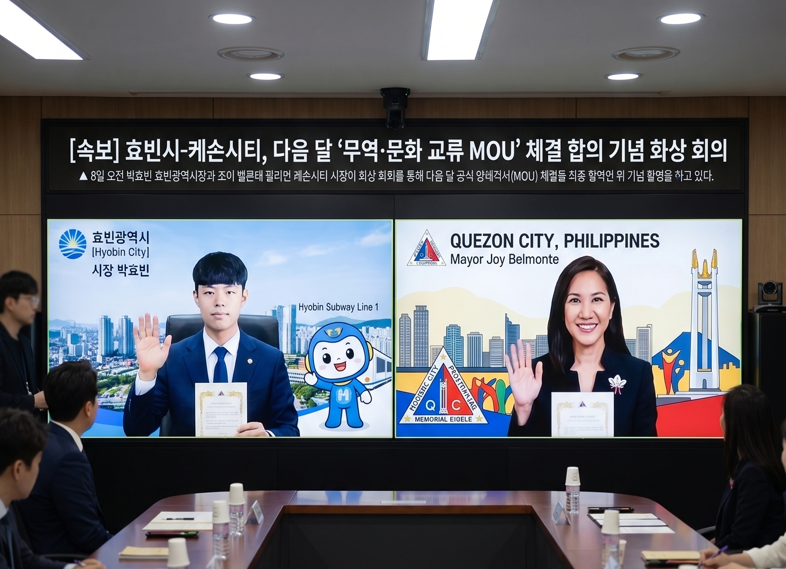

[속보] 효빈시-케손시티, 다음 달 '무역·문화 교류 MOU' 체결 합의
입력 2026.05.08 12:45
박효빈 시장 어머니의 고향이자 인구 300만 대도시와 공식 자매결연 초읽기
'인종차별 혐오'가 쏘아 올린 글로벌 연대, 막대한 경제적 실리로 돌아와
K-서브컬처·선진 철도 운영 시스템 수출 및 우수 인적 자원 교류 등 포괄적 협력

[효빈일보 = 최글로벌 기자] 효빈광역시와 필리핀 제1의 대도시인 케손시티(Quezon City)가 다음 달 공식 자매결연을 맺고 무역 및 문화 교류를 위한 포괄적 양해각서(MOU)를 체결한다. 혐오 세력의 편견과 폭력이 도리어 두 도시를 하나로 묶는 강력한 촉매제가 되어, 막대한 경제적·문화적 실리를 창출하는 전화위복의 기적을 만들어냈다.
8일 효빈시 글로벌도시재단에 따르면, 박효빈 시장은 이날 오전 조이 벨몬테 케손시티 시장과 화상 회의를 갖고, 오는 6월 케손시티 대표단의 효빈시 방문 및 MOU 체결식 일정을 최종 확정했다. 이번 협약은 최근 효빈시청 내 발생한 '탕쿠쿠 파일 폭행 및 인종차별 사건'과 윤재훈의 필리핀 현지 난동 사건 이후, 케손시티 측에서 먼저 강한 연대와 자매결연을 제안하며 급물살을 탔다.
인구 300만 명을 자랑하는 필리핀의 경제·문화 중심지 케손시티는 다름 아닌 박효빈 시장의 어머니 안다야 여사의 고향이기도 하다. 앞서 윤재훈과 악성 간부 등 혐오 세력이 케손시티를 "미개한 정글", "똥남아" 등으로 비하했으나, 박 시장의 단호한 혐오 무관용 대처가 필리핀 전역에 큰 감동을 주면서 글로벌 해시태그 운동(#WeStandWithMayorPark)으로 번진 바 있다.
이번 MOU에는 양 도시 간의 실질적인 경제 파급 효과를 겨냥한 굵직한 조항들이 담겼다. 첫째, 선진 철도 시스템 및 인프라 협력이다. 최근 코레일이 필리핀 마닐라 도시철도 7호선(MRT-7) 운영권을 따내는 과정에서 호평받은 '효빈시 흑자 운영 모델(서브컬처 연계)'을 케손시티 관내 인프라 사업에도 적극 전수하고 기술적 교류를 확대할 예정이다.
둘째, K-서브컬처 IP 수출 및 문화 교류다. 전 세계 덕후들의 성지로 자리 잡은 효빈 애니메이션 페스티벌(HAF)의 운영 노하우를 공유하고, 효빈시 기반의 창작 굿즈 및 콘텐츠를 필리핀 시장에 정식 수출하는 판로를 개척한다. 또한, 필리핀의 우수한 관광 자원과 인적 자원을 효빈시와 연계하는 관광·학술 교류 프로그램도 신설된다.
박효빈 시장은 화상 회의 직후 열린 브리핑에서 "저의 어머니의 고향이자, 편견에 맞서 가장 먼저 따뜻한 손을 내밀어준 케손시티와 형제의 연을 맺게 되어 가슴이 벅차다"며, "어리석은 혐오 세력이 부수려 했던 다문화의 가치가, 효빈시에 수천억 원의 경제적 효과와 글로벌 외교 자산으로 돌아왔음을 이번 MOU가 증명할 것"이라고 강조했다.